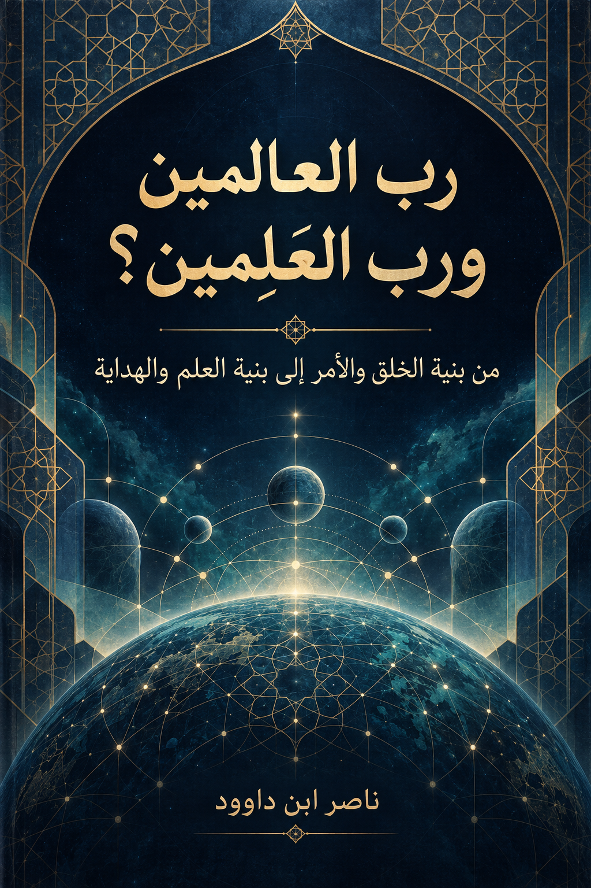

128. رَبُّ الْعَالَمِينَ وَرَبُّ «الْعَلِمِينَ»؟

من هندسة الخلق والأمر إلى هندسة العلم والهداية؛ دراسة تدبرية بنيوية مفتوحة. عبارة «رب العَلِمين» سؤال تدبري للمؤلف وليست قراءة قرآنية مثبتة.
النسخة الإنجليزية تكييف مفاهيمي مختصر وليست ترجمة حرفية كاملة؛ يبقى النص العربي المرجع الأساسي. النص القابل للبحث مستخرج من Word؛ راجع الأصل للجداول والصور والتنسيق.
قراءة PDF داخل الموقع / Read the PDF on this website
جارٍ تجهيز القارئ… / Preparing the reader…
ملخص الكتاب وفهرسه الموضوعي (مقتطف نصي للفهرسة والبحث)
رَبُّ الْعَالَمِينَ وَرَبُّ «الْعَلِمِينَ»؟
من هندسة الخلق والأمر إلى هندسة العلم والهداية
دراسة تدبرية بنيوية مفتوحة وفق منهج QCROS (الاستقراء والاختبار وضبط الحالة) ونظام المثاني
المؤلف: ناصر ابن داوود — 2026
ملخص الكتاب
يبحث هذا الكتاب شبكة «رب العالمين» في القرآن، في سياقات الحمد والرسالة والإسلام والخلق والأمر والحساب، ويختبر صلتها بالتعليم والبيان والتنزيل والهداية، مع سؤال تدبري عن العلاقة اللسانية بين «العالَم» و«العِلْم». ولا يفترض أن «رب العَلِمين» قراءة ثابتة للفاتحة، ولا أن المنهج التحليلي يغني عن حجة النص. يجمع الكتاب الآيات والفرضيات والموارد المقاومة ويترك للقارئ حق مواصلة الاختبار والحكم ببصيرته.
كيف يقرأ القارئ هذا الكتاب؟
اقرأ الآية في سياقها، واجمع النظائر، واستخرج الملاحظة، وقارن العلاقات، وصُغ الفرضية، واختبر موارد المقاومة، وسجّل درجة اليقين ثم واصل التدبر: اقرأ ← اجمع ← قارن ← افترض ← اختبر ← احكم ← واصل.
ليست تسميات «مغلق/مفتوح/مرشح» أو «نموذج» جزءًا من ألفاظ القرآن؛ إنها أدوات شفافة لتنظيم البحث.
ميثاق القارئ — كتاب «رب العالمين ورب العَلِمين»
هذا الكتاب دعوة إلى التدبر لا إلى التسليم
ليس هذا الكتاب تفسيرًا نهائيًا للقرآن، ولا يدعي مؤلفه امتلاك المعنى الأخير لكلمات الله وآياته. إنه رحلة بحثية تستكشف شبكة الربوبية والخلق والأمر والعلم والتعليم والهداية. تلتزم الدراسة بتمييز النص الثابت من الملاحظة والاستنتاج والفرضية والتصور المجازي.
ينطلق الكتاب من أن الله سبحانه هو «رب العالمين»، وأن القرآن يعرض أفعال الربوبية في الخلق والتدبير وفي التعليم والبيان والهداية. قال تعالى: ﴿أَلَا لَهُ الْخَلْقُ وَالْأَمْرُ تَبَارَكَ اللَّهُ رَبُّ الْعَالَمِينَ﴾ [الأعراف: 54]؛ وقال ﴿اقْرَأْ وَرَبُّكَ الْأَكْرَمُ الَّذِي عَلَّمَ بِالْقَلَمِ عَلَّمَ الْإِنْسَانَ مَا لَمْ يَعْلَمْ﴾ [العلق: 3–5].
الأطروحة المحورية: «الربوبية التي تخلق وتدبّر هي ذاتها الربوبية التي تعلّم وتهدي». هذا الوصف للعلاقات الوظيفية لا يفترض أن في الفاتحة قراءتين مستقلتين أو اسمين مثبتين.
القراءات والتدبر
«رب العَلِمين» في عنوان الكتاب سؤال تدبري من صياغة المؤلف، لا نص قرآني منقول.
يفتح العنوان مجالًا للتدبر في الصلة بين «العالَمين» و«العِلم»، مع بقاء لفظ الفاتحة في الاقتباس «رَبِّ الْعَالَمِينَ». لا يثبت الاشتراك في الرسم المجرد قراءة أخرى.
والقراءات وجوه منقولة يتأمل القارئ دلالاتها ببصيرته. ويذكر ابن الجزري في «النشر في القراءات العشر» أن عاصمًا والكسائي ويعقوب وخلفًا قرؤوا «مَالِكِ» بالألف، وقرأ سائر القراء «مَلِكِ» بغير ألف؛ فالوجهان ثابتان في القراءات العشر، ولكل وجه دلالته التي يتدبرها القارئ من غير إلغاء الآخر. (ابن الجزري، النشر في القراءات العشر، باب فرش سورة الفاتحة: https://www.islamland.com/uploads/books/ar_AnNshr.pdf).
وردت في التراث مدونة لأبي القاسم الهذلي (ت 465هـ) عنوانها «الكامل في القراءات العشر والأربعين الزائدة عليها»، بتحقيق جمال بن السيد بن رفاعي الشايب (مؤسسة سما للتوزيع والنشر، ط1، 1428هـ/2007م)، ويشيع وصفها بـ«القراءات الخمسين» بالنظر إلى العشر والأربعين الزائدة في عنوانها. يدل ذلك على أن المصنف جمع مادة قرائية واسعة تتجاوز العشر، ولا يثبت أن كل وجه فيها متواتر أو مقبول للعمل به، ولا أنها إحصاء جامع لكل ما رُوي؛ فالجمع في كتاب لا يساوي بذاته حكمًا نقديًا على كل قراءة. وفي مقدمة «النشر في القراءات العشر» يبين ابن الجزري معاييره وموقفه من الأوجه المقبولة والشاذة والمنفردة؛ لذلك فعبارة «اعتماد العشرات فقط» تحتاج إلى تحديد المقصود بالاعتماد ومرحلته التاريخية ومصدر الحكم، ولا تُختزل في قرار واحد. وبصيرة القارئ مجال للتدبر في الدلالات المنقولة، لكنها لا تنشئ سند قراءة؛ وتظل «رب العَلِمين» فرضية تدبرية/استنباطًا لغويًا لا قراءة منقولة. (الهذلي، «الكامل في القراءات العشر والأربعين الزائدة عليها»: https://usul.ai/ar/t/kamil-fi-qiraat/1؛ بيانات الطبعة: https://quranpedia.net/book/2523؛ ابن الجزري، «النشر في القراءات العشر»، المقدمة: https://quranpedia.app/uloom/nashr/index.html).
أمانة البحث وحرية القارئ
1. يُنقل النص القرآني بلفظه وضبطه ومراجعه، دون استبدال لفظ بفرضية تفسيرية.
2. تُعرض القراءات المتحققة بحسب مصادرها، وتُفصل عن التدبرات المعاصرة.
3. يوضع عنوان «أطروحة تدبرية» عند النماذج المفتوحة، وعنوان «نتيجة مدعومة» عند العلاقات المثبتة.
4. لا يُرفع الاستنباط إلى قانون قبل جمع موارد المدونة واختباره عكسيًا.
5. «التجاور ≠ السببية»، و«ترتيب النص ≠ ترتيب زمني لازم»، و«المؤلَّف السابق ≠ دليل مستقل للمدونة الحالية».
6. نظام المثاني أداة لاستكشاف الإمكانات الدلالية، والسياق والموارد هما الحاكمان على ترجيحها.
7. للقارئ أن يكمل الاستقراء أو يخالف المؤلف، ما دام يقدم الدليل والسياق بدل التسليم أو مجرد الانطباع.
هذا الضبط لا يقيّد عقل القارئ: فله أن يضرب الآيات بالآيات، ويتأمل وحدة السورة ومقاصدها، ويقترح الروابط التي يراها؛ على أن يميز بين ما نص عليه القرآن، وما يظهر من السياق، وما يستنبطه أو يقترحه نموذجًا، وأن يعرض رأيه للمورد المقاوم والاختبار العكسي.
الحد الفاصل بين حرية التدبر ونسبة القول إلى القرآن
حرية الاجتهاد لا تعني حرية إعادة ضبط آية في متن الاقتباس. في آل عمران 7 يرد «وَمَا يَعْلَمُ تَأْوِيلَهُ إِلَّا اللَّهُ»، لا «وما يُعَلِّم تأويله». التعليم الرباني للإنسان يؤخذ من آيات التعليم الصريحة، ولا يُصنع من تبديل صيغة فعل في آية أخرى.
الفهرس
1 ملخص الكتاب 2
2 كيف يقرأ القارئ هذا الكتاب؟ 2
3 ميثاق القارئ — كتاب «رب العالمين ورب العَلِمين» 2
4 الفهرس 5
5 القسم الأول — الربوبية الشاملة 9
6 الباب الأول — «رب العالمين»: الاسم الجامع وشمول الربوبية 9
6.1 تمهيد — لماذا نعيد فتح «رب العالمين»؟ 9
6.2 الفصل الأول — التركيب في مواقع الحمد والرسالة والإسلام 9
6.3 الفصل الثاني — سؤال فرعون وجواب موسى: من الرب السياسي المدّعى إلى شمول الربوبية 10